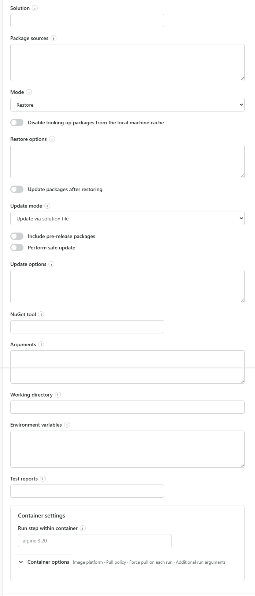

NuGet Installer
Restores the NuGet packages of a solution or project with nuget restore, from the sources you name.
When to use it
Use it before a MSBuild or .NET step, so the packages your solution needs are on the agent. It can also install the packages of one packages.config and update packages afterwards.
How to set it up
- Open the build configuration and click Settings › Build Steps.
- Click Add build step. Type
NuGet Installerin Filter step types if you like, then click the NuGet Installer tile (group Packages). - Type a Step name, for example
Restore packages. - Fill in the fields described below.
- Optional: set Execute step, Conditions and Retry on failure. See The steps list and the step editor.
- Click Save.

Every field
| Field | What it does | Default | Example |
|---|---|---|---|
| Solution | A solution, project or packages.config, relative to the working directory. Runs nuget restore on it. Empty lets nuget look in the working directory. | Empty | Tools/BuildTools.sln |
| Package sources | One source per line, each passed as -Source. Empty uses the sources nuget is configured with. | Empty | https://nuget.studio.example/v3/index.json |
| Mode | Restore runs nuget restore on a solution or project. Install runs nuget install on one packages.config. | Restore | Restore |
| Disable looking up packages from the local machine cache | Passed as -NoCache. | Off | Off |
| Restore options | One argument per line, passed to the restore or install after the sources. Do not put a secret here. | Empty | -Verbosity then quiet |
| Update packages after restoring | Runs nuget update on the same file after the restore succeeds, with the same sources. | Off | Off |
| Update mode | Update via solution file: the file above is a solution or project. Update via packages.config file: it must be a .config file, or the step stops before it runs. | Update via solution file | Update via solution file |
| Include pre-release packages | Passed as -Prerelease to the update. | Off | Off |
| Perform safe update | Passed as -Safe to the update: only the smallest version change. | Off | On |
| Update options | One argument per line, passed to the update only. | Empty | -FileConflictAction then Ignore |
| NuGet tool | Path of nuget.exe. Empty takes nuget from the agent's PATH. | Empty | C:\tools\nuget.exe |
| Arguments | One argument per line, such as -PackagesDirectory. Pass a secret through the environment. | Empty | -PackagesDirectory then packages |
| Working directory, Environment variables, Test reports, Run step within container | The same in every runner. See Fields every runner has. |
A worked example
Restore the tools solution before the build. Step name Restore packages, Solution Tools/BuildTools.sln, Package sources https://nuget.studio.example/v3/index.json.
What you see when it runs
The console shows $ nuget restore Tools/BuildTools.sln -Source … and the list of restored packages.
Problems and fixes
| Problem | What to do |
|---|---|
| The nuget command was not found on this agent | Install nuget, put it on the PATH or set NuGet tool. |
| The NuGet Installer step updates packages but has no solution or packages.config | Fill in Solution. |
| … updates via a packages.config file, but its file is not a .config file | Choose Update via solution file, or name a .config file. |